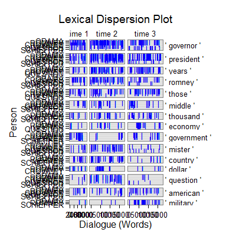

kwic(text.var, grouping.var, n.before = 1, tot = FALSE, n.after = n.before, ord.inds = TRUE, markup = c("<<", ">>"), top = 15, at.least = 5, extend = TRUE, ignore.case = FALSE, left = "\\b", right = "", names = c("KeyWords"), elim.old = FALSE, stopwords = c("going", qdapDictionaries::contractions[[1]], qdapDictionaries::Top200Words), ...)
TRUE condenses sub-units (e.g., sentences)
into turns of talk for that grouping.var.TRUE inds is ordered least to greatest.c("", "") to not mark the discourse
connectors.TRUE the top argument is extended to
any word that has the same frequency as the top word.TRUE leading character's case is
ignored.\\b) that cuts off at non-word characters."\\blast" will find "last" and "lastly" but not
"blast". To capture precisely key words use right = "\\b" or
right = left.termco and
generic plot (dispersion_plot) functions.TRUE eliminates the columns that are
combined together by the named match.list.termco.Returns returns a list of 2-3:
countsA termco object of discourse connector counts.
Context 1A trans_context object of the key words in context. Note the name of this object is supplied by names element one.
Context 2...nAn optional (not returned if regex is of length one) trans_context object of the key words in context. Note the name of this (these) object(s) is supplied by names element 2...n.
Extract key words in context (kwic) utilizing freq_terms.
While kwic does not analyze discourse connectors, it is useful
in identifying themes (and distribution across time) and builds upon the
modular use of functions in the pkgdiscon package.
Ryan, G. W. & Bernard, H. R. (2003). Techniques to identify themes. Field Methods. 15(1), 85-109. doi: 10.1177/1525822X02239569
out <- with(pres_debates2012, kwic(dialogue, list(time, person))) plot(out[[1]])head(out[[2]])=================================== Event 1: [lines 3-5] time 1.ROMNEY: What I support is no change for current retirees and near retirees to Medicare. ** time 1.ROMNEY: And the <<president>> supports taking <<dollar>> seven hundred sixteen billion out of that program. time 1.LEHRER: And what about the vouchers? =================================== Event 2: [lines 9-11] time 1.ROMNEY: They get to choose and they'll have at least two plans that will be entirely at no cost to them. ** time 1.ROMNEY: So they don't have to pay additional money, no additional <<dollar>> six <<thousand>>. time 1.ROMNEY: That's not going to happen.with(pres_debates2012, plot(out, grouping.var = person, rm.vars = time, total.color = NULL))
## Save externally use .doc or .txt ## print(out[[2]], file="kwic.doc")